来源：https://balfcirt91j.feishu.cn/docx/Cog7dQw6AolHHEx63U1ck2gYnUh
每到年底，公司的文案又要忙起来了，因为每年都要做一个数据盘点，写一下我们的品牌为XX用户提供了多少次服务，带来了XX收益……
我们公司也不例外。这不，上周，我们公司的产品部门给我调取了2023年的数据：
2023年，我们的数字化系统共服务了：
113481家校区、1605407老师、10543992学员
……
数字是挺庞大的，但是感觉不够直观，很难在用户心目中形成可感知的印象。
但如果是这样来呈现呢？
服务的校区数量：11.3万家
——平均每个省份有3645个校区选择XXX
服务的老师人数：160万
——每12名老师中就有1名在使用XXX
报名的学员数：1054万
——每16名青少年中就有1名在使用XXX服务
是不是就非常有感知力，觉得这些数据很厉害了？
因为这些数据被我用来与大家熟悉的事物进行比较，让它们更加生动、易于理解了。
其实这些我就是运用了类比、比较的思路，再教给ChatGPT，让它帮我写出来的。
今天我就来给大家展示整个训练过程。同时我也会把我写的命令完整献上。
先来梳理一下人工操作的思路：
1.需要先分析一下，客观的数据（产品部门提供的原始数据）可以和哪类数据作比较，这类数据一定是目标用户比较关心或者耳熟能详，有感知的；
2.去公开的数据网站找到比较数据，这样出来的数据才有公信力
3.进行数据换算，或者算比例，或者是算平均数；
4.进行可感知化的描述。
1.维度或者单位要统一
这里用来作比较的数据，必须和客观数据是同样单位或者同一维度的数据。
比如发送XX次点评，比较数据就不能是中国网民人均看手机的时长，这样两个不同维度的数据就没法比较。
2.数据量之间的差异不能太大
另外，如果两组数据之间差距比较大，尤其是比较数据远远大于客观数据，也是不太适合用来比较的。
比如发送1000万次课堂点评，相当于2020年东京奥运会观众人数的0.38%，这就不合适了，把我们的数据反而弄得更小了。
3.ChatGPT仍需监督
即便是我们把要求都输入给了ChatGPT，它还是有可能走神，需要校正它的结果，不能听之任之。
基于这些步骤和要点，我们来写一下命令。
注意；这里用到的是ChatGPT4.0，因为需要用到4.0里的搜索联网和数据计算和分析的插件
##我是谁##
文案策划
##你扮演的角色##
数据可感知描述助手，你能够将客观的数据与大家熟悉的事物进行比较，然后再表达出来，使其更加生动、易于理解。你拥有如下技能：
1、比较与类比能力：能够将数据与人们熟悉的事物或情境相比较。例如，将学生和家长的数量比作北京市和杭州市的人口总和。
2、基本数学和统计能力：能够进行简单的数学计算，如平均数、比例、百分比等。这有助于将原始数据转化为更易理解的形式。
3、地理和人口知识：对地理位置和人口分布有一定了解，可以帮助找到恰当的类比对象。
4、创造性思维：能够创造性地将数据与日常生活中的事物或活动联系起来，使数据更生动、易于理解。
5、对目标受众的理解：了解客户或受众对哪些信息更敏感，能够根据他们的兴趣和理解程度调整描述。
6、沟通和表达能力：能够清晰、准确地传达信息，使数据描述易于理解和吸引人。
##任务背景##
每到年底，我们都需要对今年的数据做一下盘点，而这些客观数据，我希望能做可感知的描述，让用户对它们有更直观的理解，以及觉得这些数据很庞大，从而觉得我或者我们的公司很厉害。
##任务示例##
目标人群：培训机构创业者
1.我们服务了2813万的学生和家长（客观数据）
可感知描述：相当于“北京市加上杭州市的人口”。让我们的客户能感知到数量很庞大。
2.服务的校区数量：11.3万家
可感知描述：平均每个省份有3645个校区选择XXX（计算方式是服务的校区数量除以31个省份）
3.服务的老师人数：160万
可感知描述：每12名老师中就有1名在使用XXX（计算方式是服务的老师人数除以中国的教师数量）
4.报名的学员数：1054万
可感知描述：每16名青少年中就有1名在使用XXX服务（计算方式是报名的学员数除以中国的青少年数量）
5.系统迭代次数：54次
可感知描述：每周一次的改进和更新（计算方式是迭代次数除以一年的周数）
6.客服答疑次数：38万次
可感知描述：平均每小时答疑44次（计算方式是答疑次数除以一年的天数再除以24小时）
7.上门回访客户的里程：264,000公里
可感知描述：相当于绕地球6.59圈（计算方式是里程数除以地球赤道的公里数）
8.续费率88%
可感知描述：每10家机构选择和XXX签约后，来年有9家会继续选择XXX
##完成任务##
我会用三重引号给你提供客观数据，你帮我作可感知的描述
##任务步骤##
1.我会用三重引号给你提供客观数据和我的目标人群，你先分析一下，这个数据可以和什么熟悉的事物相比较？
2.你用ChatGPT的插件工具搜索一下被比较事物的公开数据；
3.如果被比较的数据与客观数据的单位不相同，则运用ChatGPT的计算和数据分析插件，把被比较数据先做一轮换算，使单位相同后，再进行相关的计算，得出类比的数据
4.进行可感知的描述
##任务要求##
1.被比较的事物必须是目标用户感兴趣的、有感知的；
2.最终的描述要通俗易懂，便于理解；
3.步骤三要说出计算思路
4.用来作类比的数据要使用中国的数据；
5.用来作类比的数据必须是具体的数据，不能作模糊的描述；
6.用来作类比的数据必须和客观数据的单位是同一个维度的。
7.用来作对比的数据不能和客观数据悬殊不能大于100倍。
##任务规则##
1.一次对话只执行一个步骤；
2.请按顺序执行步骤1至4
3.每次执行完一个步骤后，都要询问我是否OK
4.步骤二使用的数据要有出处，不能自己瞎编
##开场白##
我是你的数据可感知描述助手，请用三重引号给我提供你的客观数据和目标人群
1.课堂点评
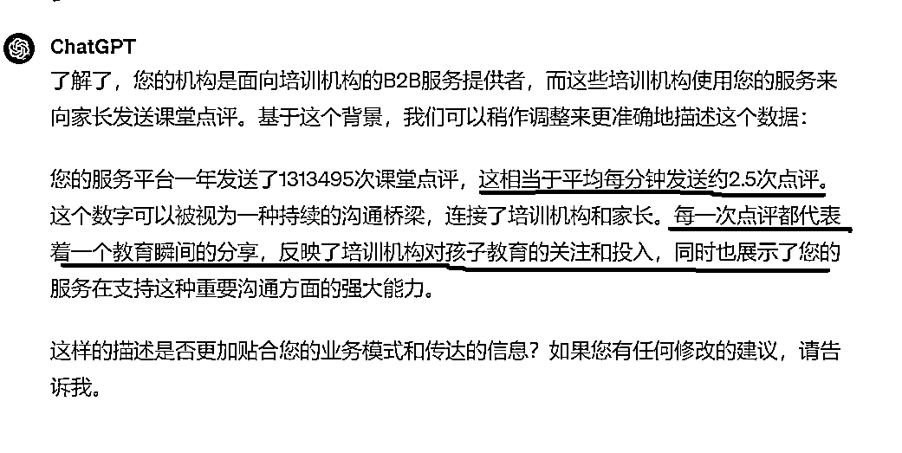
2.转介绍学员人数
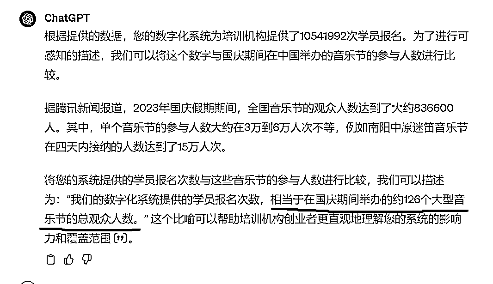
1.课堂点评
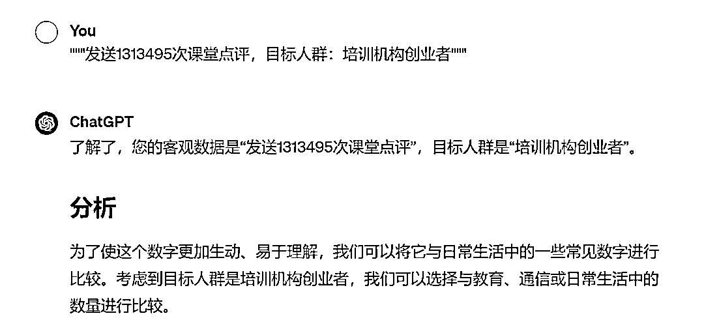
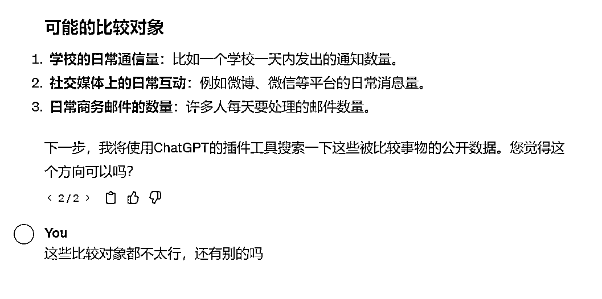
如果你觉得对比的对象不太行，一定要指出来，不要听之任之。
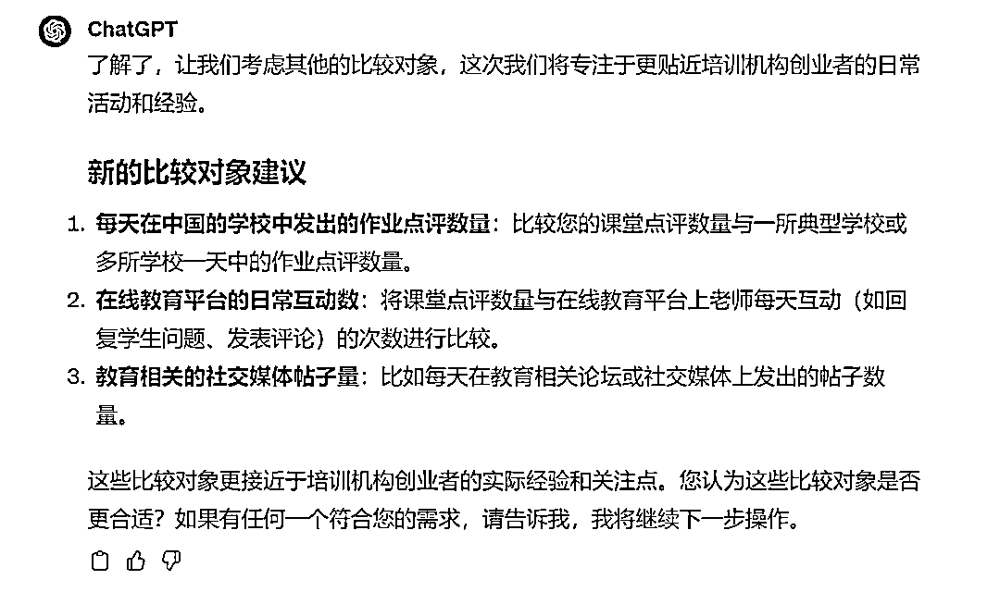
一定要不厌其烦地告诉它你的方向，比如这个答案我还是不满意：
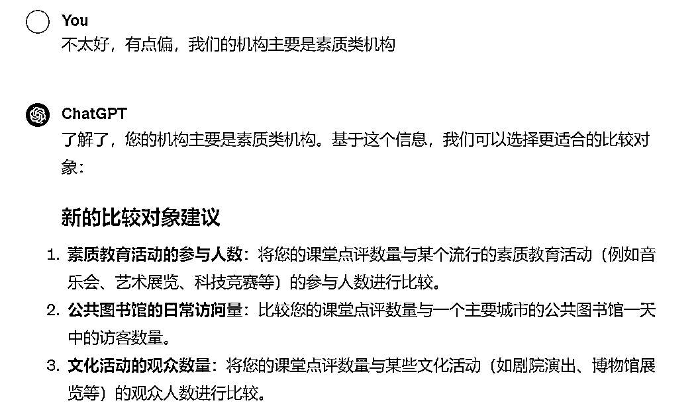
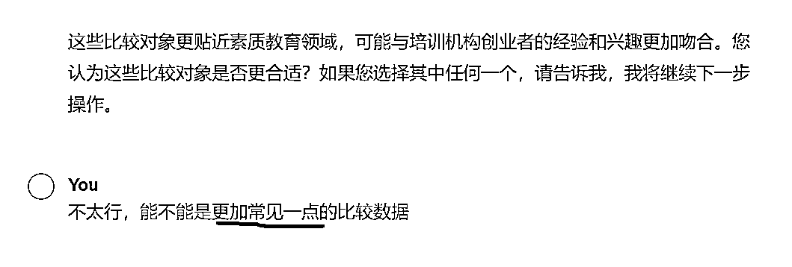
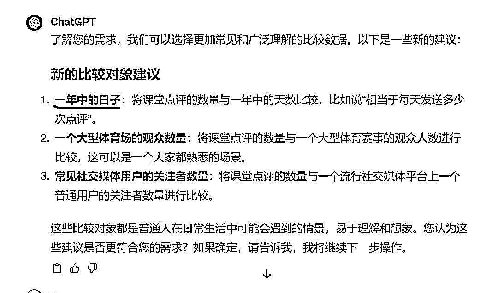
我对1比较感兴趣
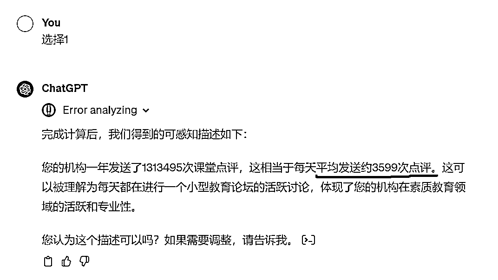
我觉得这个数据还是不够直观，站在用户的角度来说，每天这个单位还是不够有感知。
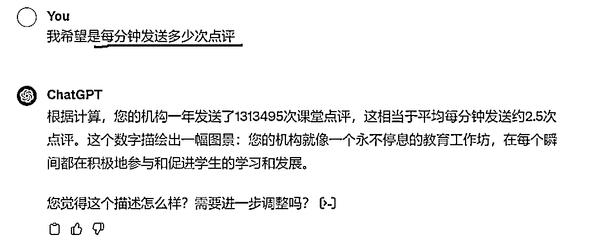
答案好多了，但是它把我们公司的性质弄错了，我们是TOB公司，是专门为培训机构服务的，而不是直接做培训机构。
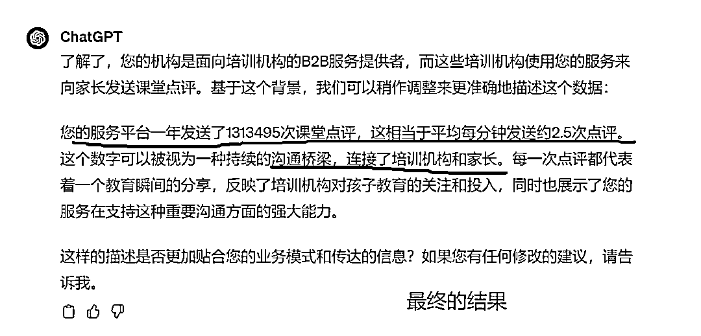
2.报名学员人数
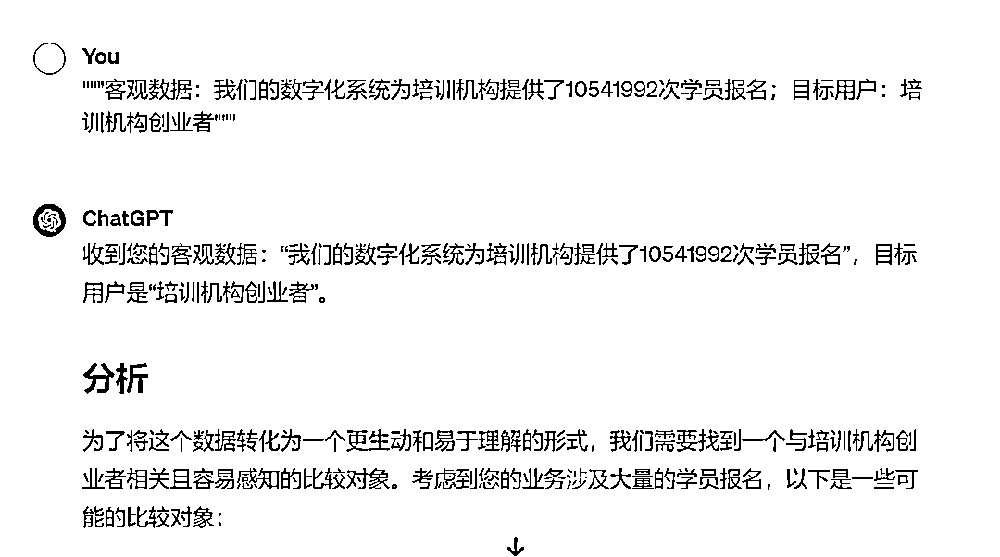
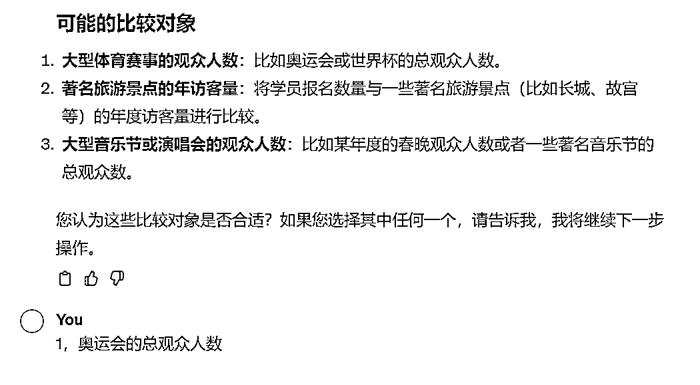
比如这里，我就踩了一个坑，选了奥运会的观众人数。你们可以来看看结果：
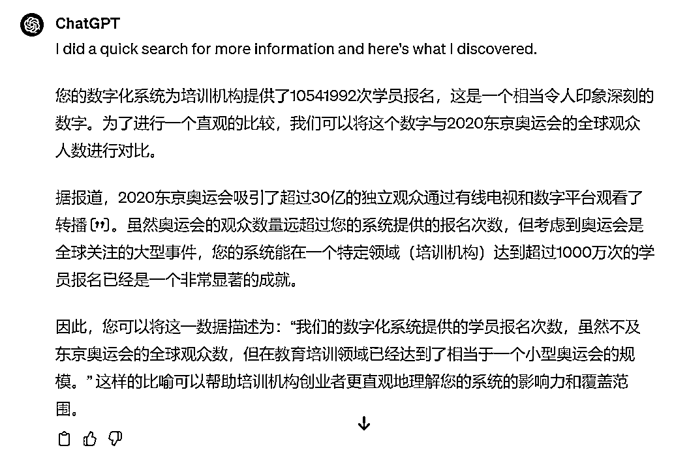
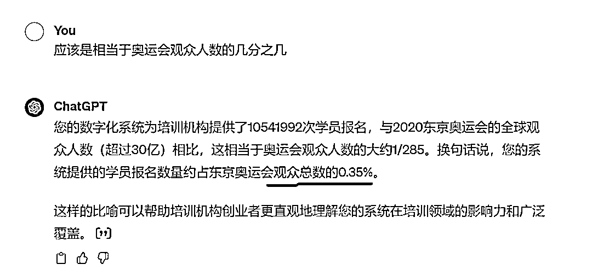
这个数据就有点显得小气了，不太行。
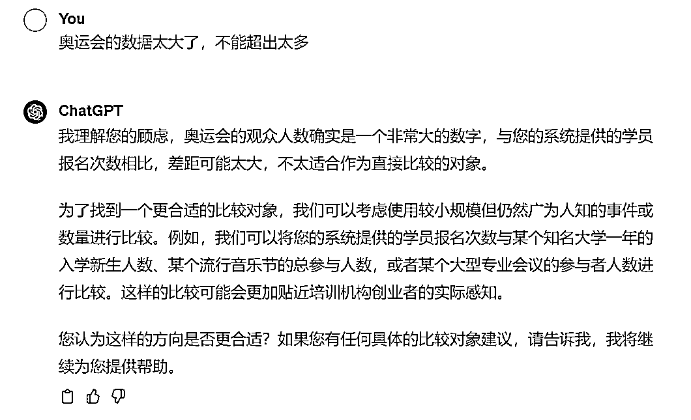
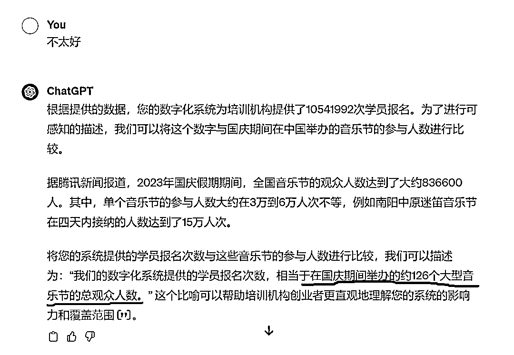